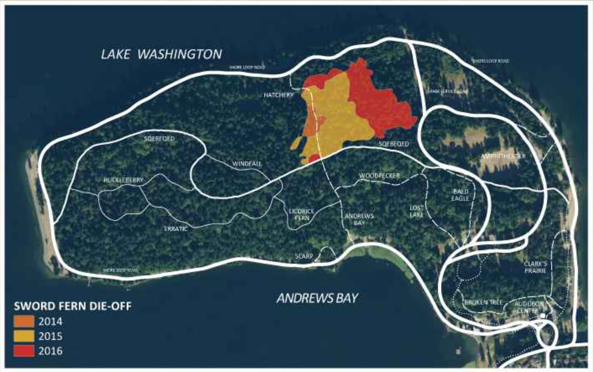
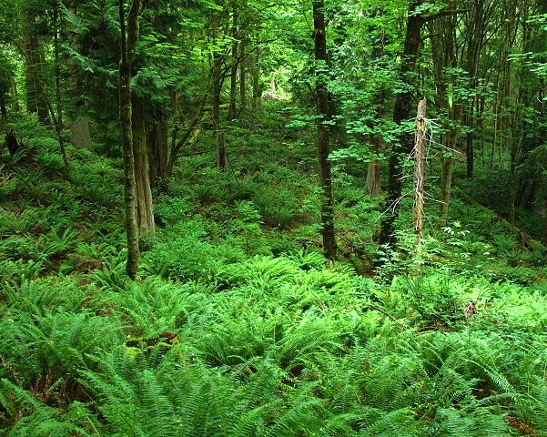
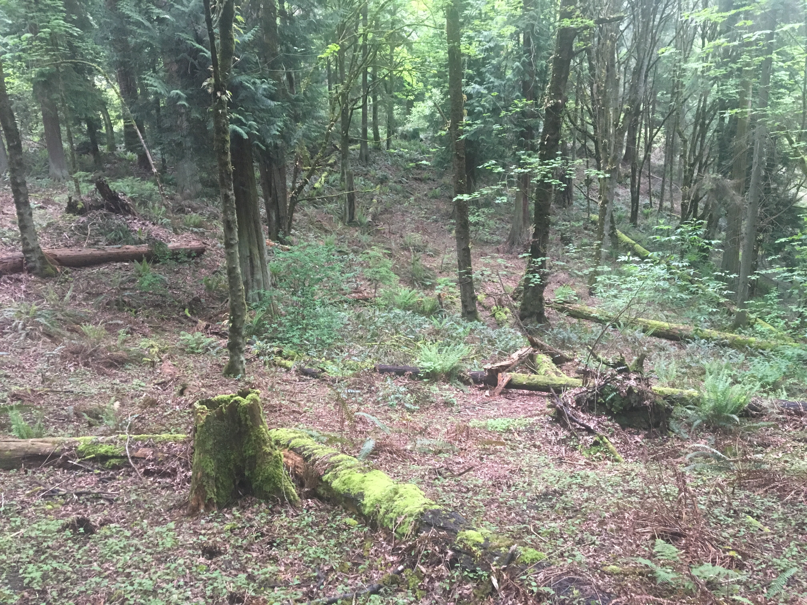

The Sword Fern Die-Off at Seward Park
The die-off was first noticed in the autumn of 2013 at what we now refer to as
Ground Zero: a quarter acre
of gently sloping land on the south side of the the Hatchery Trail. By July of 2014 this previously dense
stand of large sword ferns was more than 90% dead, and the ground was bare.
In subsequent years, the die-off has spread, more than doubling in size (on average) each year, as
can be seen in the map below. At present (Novermber 2017) dead ferns may be found, at least in
isolated patches, throughout the Seward Park peninsula. The mostly contiguous region centered on Ground Zero
now covers fifteen acres, about 10% of the old-growth forest. The spread is primarily radial, as if
from a pathogen whose movement is not principally determined by the downhill flow of water.

Research
An informal and volunteer group of researchers, both academic and lay, and with support from Seattle Parks,
has been studying the die-off since November of 2014. Foremost among this group is plant pathologist
Dr. Marianne Elliott from the WSU Puyallyp Plant and Insect Diagnostic Laboratory, and ecologist
Dr. Tim Billo from the UW College of the Enviroment. Plausible hypotheses - introduced phythophthora and mountain
beavers - have been systematically tested by members of this grou and, in each case, rejected.
The cause remains a mystery. Indirect effects of climate change may be involved.
Sword Fern Biology
The Sword Fern,
Polystichum munitum is the dominant understory plant of the Pacific Northwest's
Douglas Fir/Hemlock/Cedar forests. Sword ferns colonize disturbed ground after disturbance: fire, glaciation,
logging. Current expert opinion holds that ferns do not reproduce beneath a closed forest canopy, and that
individual ferns live for hundreds of years: "1000 years is not out of the question" says Polystichm genus expert Dr. David
Barrington of the University of Vermont.
Dr. Barrington, along with other fern experts (Dr Robbing Moran, Curator of Ferns And Lycophytes at the NY Botannical
Garden, plant pathologist Dr. Rodrigo Valverde of LSU, research botaninst emeritus at the UC Berkeley Herbariaum,
Dr. David Wagener of the Northwest Botanical Institute) all agree that the die-off is, to the best of their knowledge,
unprecedented.
Possible Causes
Many have been suggested, none supported by the evidence we have collected. Please see this
summary.
What We Have Lost
Before (2011) & after (2017) photos of the same location at Seattle's Seward Park
 
Regional Summary: Die-Off report from across the Puget Lowlands
- Seward Park, 15 acres, first observed 2014, severity 10
- Suquamish (private property), 2 acres, 2010, severity 10
- Indianola > 1 acre, 2017, severity 8
- Port Ludlow, private forest, 0.5 intermittent acres along a trail, 2017, severity 8
- Cheasty Mt. View, a Seattle Park, ~0.5 acre, 2016, severity 6
- Upper Luther Burbank Park, Mercer Island, 0.1 acre, 2016, severity 6
- Baring, private property, 0.1 acres, 2016, severity 5
- (Rochester, unconfirmed, > 1 acre, 2016)
- Fort Worden State Park, several acres, 2017, severity 8
- Hornby Island Helliwell Provincial Park, BC, > 2 acres, severity 7
For Yet More Information
We have kept a
blog since November of 2015. Look there for lab reports, field studies, maps,
hypotheses, and email exchanges with fern experts.